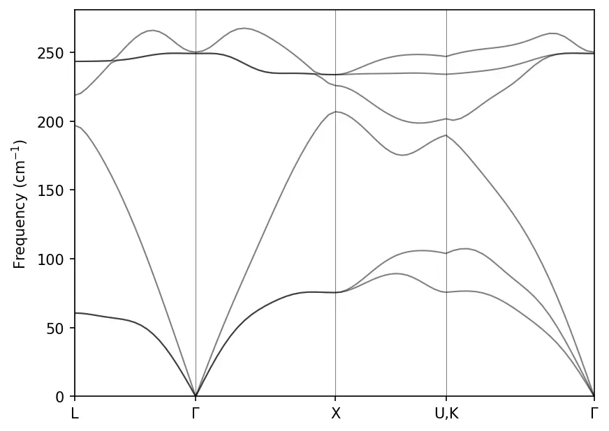
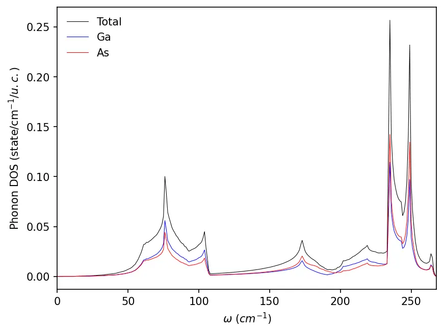

Dispersão de fônons
No Quantum ESPRESSO, a dispersão de fônons é calculada com o programa ph.x, uma implementação da teoria de perturbação do funcional da densidade (DFPT).
Estes são os passos para calcular a dispersão de fônons:
(1) fazer o cálculo SCF com o pw.x
&control
calculation = 'scf'
prefix = 'GaAs'
pseudo_dir = '../pseudos/'
outdir = './tmp/'
verbosity = 'high'
wf_collect = .true.
/
&system
ibrav = 2
celldm(1) = 10.861462
nat = 2
ntyp = 2
ecutwfc = 80
ecutrho = 640
/
&electrons
mixing_mode = 'plain'
mixing_beta = 0.7
conv_thr = 1.0e-8
/
ATOMIC_SPECIES
Ga 69.723 Ga.pbe-dn-kjpaw_psl.1.0.0.UPF
As 74.921595 As.nc.z_15.oncvpsp3.dojo.v4-std.upf
ATOMIC_POSITIONS
Ga 0.00 0.00 0.00
As 0.25 0.25 0.25
K_POINTS {automatic}
8 8 8 0 0 0Fazemos o cálculo SCF:
mpirun -np 4 pw.x -i pw.scf.GaAs.in > pw.scf.GaAs.out-
Em geral usam-se cortes de energia maiores no cálculo de fônons, para obter mais precisão.
-
Em sistemas bidimensionais, use
assume_isolated = '2D'na namelistSYSTEMpara evitar frequências acústicas negativas ou imaginárias perto do ponto \(\Gamma\). Leia mais aqui.
(2) calcular a matriz dinâmica numa malha uniforme de pontos q com o ph.x
&INPUTPH
outdir = './tmp/'
prefix = 'GaAs'
tr2_ph = 1d-14
ldisp = .true.
! recover = .true.
nq1 = 6
nq2 = 6
nq3 = 6
fildyn = 'GaAs.dyn'
/Rode o cálculo:
mpirun -np 4 ph.x -i ph.GaAs.in > ph.GaAs.outO cálculo acima é computacionalmente exigente. Nosso exemplo levou cerca de um dia inteiro num processador de quatro núcleos de 2,6 GHz.
Você pode retomar um cálculo ph.x interrompido com recover = .true. na namelist INPUTPH. Para encerrar de forma limpa um cálculo em andamento, crie um arquivo vazio com o nome {prefix}.EXIT.
(3) fazer a transformada de Fourier inversa da matriz dinâmica para obter as componentes no espaço real, com o q2r.x. Este é o nosso arquivo de entrada:
&INPUT
fildyn = 'GaAs.dyn'
zasr = 'crystal'
flfrc = 'GaAs.fc'
/mpirun -np 4 q2r.x -i q2r.GaAs.in > q2r.GaAs.out(4) Por fim, fazer a transformada de Fourier das componentes no espaço real para obter a matriz dinâmica em qualquer q, com o matdyn.x.
&INPUT
asr = 'crystal'
flfrc = 'GaAs.fc'
flfrq = 'GaAs.freq'
flvec = 'GaAs.modes'
! loto_2d = .true.
q_in_band_form = .true.
q_in_cryst_coord = .true.
/
5
0.500 0.500 0.500 20 ! L
0.000 0.000 0.000 20 ! G
0.500 0.000 0.500 20 ! X
0.375 0.375 0.750 20 ! K
0.000 0.000 0.000 1 ! Gmpirun -np 4 matdyn.x -i matdyn.GaAs.in > matdyn.GaAs.outAgora podemos fazer o gráfico da dispersão de fônons do GaAs:
import numpy as np
import matplotlib.pyplot as plt
data = np.loadtxt("../src/GaAs-phonon/GaAs.freq.gp")
nbands = data.shape[1] - 1
for band in range(nbands):
plt.plot(data[:, 0], data[:, band + 1], linewidth=1, alpha=0.5, color='k')
# High symmetry k-points (check matdyn.GaAs.in)
plt.axvline(x=data[0, 0], linewidth=0.5, color='k', alpha=0.5)
plt.axvline(x=data[20, 0], linewidth=0.5, color='k', alpha=0.5)
plt.axvline(x=data[40, 0], linewidth=0.5, color='k', alpha=0.5)
plt.axvline(x=data[60, 0], linewidth=0.5, color='k', alpha=0.5)
plt.xticks(ticks= [0, data[20, 0], data[40, 0], data[60, 0], data[-1, 0]], \
labels=['L', '$\Gamma$', 'X', 'U,K', '$\Gamma$'])
plt.ylabel("Frequency (cm$^{-1}$)")
plt.xlim(data[0, 0], data[-1, 0])
plt.ylim(0, )
plt.show()
Talvez seja preciso diminuir o valor de conv_thr no cálculo scf para um resultado mais preciso.
Densidade de estados de fônons
Arquivo de entrada para o cálculo da DOS de fônons:
&INPUT
asr = 'crystal'
flfrc = 'GaAs.fc'
flfrq = 'GaAs.dos.freq'
flvec = 'GaAs.dos.modes'
dos = .true.
fldos = 'GaAs.dos'
nk1 = 25
nk2 = 25
nk3 = 25
/Gráfico da DOS de fônons:
freq, dos, pdos_Ga, pdos_As = np.loadtxt("../src/GaAs-phonon/GaAs.dos", unpack=True)
plt.plot(freq, dos, c='k', lw=0.5, label='Total')
plt.plot(freq, pdos_Ga, c='b', lw=0.5, label='Ga')
plt.plot(freq, pdos_As, c='r', lw=0.5, label='As')
plt.xlabel('$\\Omega~(cm^{-1}$)')
plt.ylabel('Phonon DOS (state/cm$^{-1}/u.c.$)')
plt.legend(frameon=False, loc='upper left')
plt.xlim(freq[0], freq[-1])
plt.show()
Recursos
- Escola de Física Elétron-Fônon por Primeiros Princípios (2018) (aulas em vídeo no YouTube)
- https://github.com/nguyen-group/QE-SSP
Conteúdo adaptado de Phonon dispersion, do Quantum Espresso Tutorial de Pranab Das, sob licença CC BY 4.0. Alterações: texto traduzido para o português; layout e navegação adaptados.